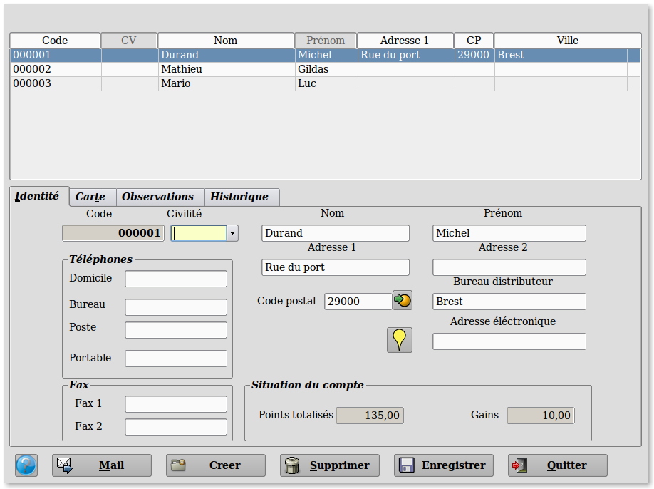
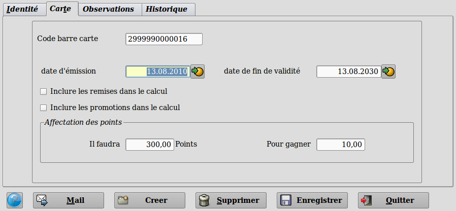
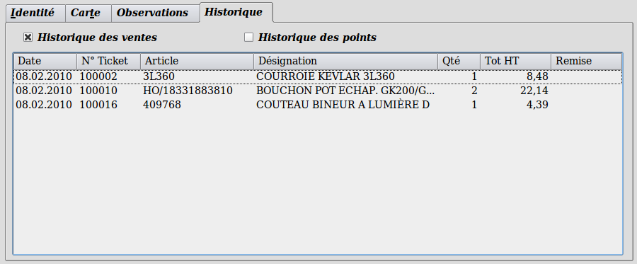

~ Laurux.Pos ~

~ Laurux.Pos ~ |
|
|
|
Table des cartes de fidélité.
Ce programme va servir à la création des cartes de fidélité ou des clients caisses divers ainsi qu'à la visualisation des historiques,

Pour créer
une nouvelle carte de fidélité on cliquera sur le bouton "Créer"
Les cartes ont un code sur 13 caractères afin de
pouvoir les scanner avec un lecteur code barre.
Les codes sont construit de la
façon suivante. 7 neufs suivis par une numérotaion incrémentielle sur
6
caractères.
Cette codification permet une
saisie à n'importe quel moment du ticket soit par un lecteur optique
soit manuellement. La saisie manuelle peut se faire en tapant
seulement
les chifres significatifs (sans les zéros) précédés d'une *. Dans
l'exemple ci-dessus, à la caisse, on pourra saisir *1 pour appeler la
carte concernée.
Les différentes parties concernent les coordonnées du
client avec, en bas à gauche, la situation du compte. On peut, comme
dans la table des clients, proceder à une géolocalisation Google maps
par le bouton had-hoc.

Le deuxième onglet "Carte"
permet de saisir les
dates d'émission (date du jour de la création par défaut) et la date de
fin de validité.
On peut aussi décider d'inclure les
produits avec remises ou en promotion dans le calcul des points gagnés
par le client.
Le panel "Affectation
des points" servira a déterminer le montant du bonus en Euros en
fonction du nombre de points gagnés.
Le troisième onglet "Observation"
offre la
possibilité de saisr des renseignements divers.

Le quatrième onglet "Historique"
offre la
possibilité de visualiser les historiques des ventes ou des points pour
chaque carte.
----------------------------------------------------------------------------------------------------------------------